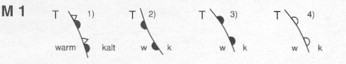
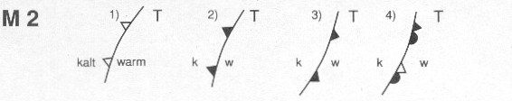
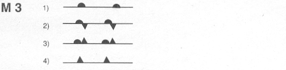
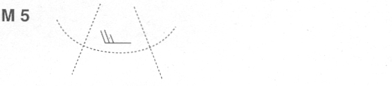

1 Welche Bezeichnung trägt die Schicht, in der sich das Wettergeschehen abspielt, und wie hoch liegt die durchschnittliche Obergrenze?
Troposphäre 11 km
Stratosphäre, 20 km
Troposphäre, 20 km
Stratosphäre, 36 000 ft
2 Wie ändert sich der prozentuale Anteil des Sauerstoffes in der Troposphäre mit zunehmender Höhe? Er
bleibt gleich
nimmt zu
nimmt ab
nimmt je nach Luftdruck ab oder zu
3 In welcher ungefähren Höhe reduziert sich der atmosphärische Druck um die Hälfte des Druckes vom Meeresniveau?
5 500 m
1 500 m
2 500 m
7 000 m
4 Welche Bezeichnung trägt die Lufthülle der Erde?
Atmosphäre
Troposphäre
Homosphäre
Stratosphäre
5 In welchem Bereich der Atmosphäre spielt sich das Wettergeschehen ab?
Troposphäre
Tropopause
Mesosphäre
Stratosphäre
6 Wie heißt die unterste Sphäre, beziehungsweise die Zone des Wettergeschehens?
Troposphäre
Stratosphäre
Mesosphäre
Thermosphäre
7 Worauf ist orographische Turbulenz zurückzuführen? Auf die
Auf die Oberflächenform des Erdbodens und die Stärke des Windes
Auf die Luftfeuchtigkeit
Nur auf die Oberflächenform des Erdbodens
Nur auf die Stärke des Windes
8 Was kann die Ursache für Turbulenzen im Landeanflug sein?
das Vorhandensein verschieden hoher Hindernisse vor der Landebahn sowie ein mäßiger bis starker Wind
die starke Erwärmung feuchter Wiesen vor der Landebahn
das Herannahen einer Warmfront
ein starker Luftdruckabfall
9 Sie starten auf einem Flugplatz, an dessen Ende eine Pappelreihe steht. Sie rechnen mit?
mit Leeturbulenzen
Wellenbildung mit einem Aufwind
einer Verkürzung der Startstrecke
mit ruhiger Luft, die Baumreihe hält den Wind ab
10 Welche Richtung hat der Wind über der Bodengrenzschicht (ca. 1500 m)?
Parallel zu den Isobaren
Von Süden nach Norden
Rechtwinklig zu den Isobaren
Von der warmen zur kalten Luftmasse
11 Der Bodenwind strömt
vom Hochdruck- zum Tiefdruckgebiet
von West nach Ost
entsprechend dem Barischen Windgesetz
vom Tiefdruck- zum Hochdruckgebiet
12 Bei einem Bodenwind W/V = 360 Grad/10 kt ist in etwa 1000 m Höhe zu erwarten: Ein W/V =
030 Grad/20 kt
150 Grad/30 kt
330 Grad/30 kt
330 Grad/20 kt
13 Bei einem Flug das Rhonetal aufwärts ist zeitweise mit erheblichem böigem Gegenwind zu rechnen. Dieser orographisch bedingte Wind heißt
Mistral
Monsun
Bora
Föhn
14 Mistral ist ein orographisch bedingter Wind. Wo ist er anzutreffen?
Im Rhonetal
An der Adria
In der oberitalienischen Tiefebene
An der Nordseite der Apenninen
15 Bora ist ein orographisch bedingter Wind. Wo ist er anzutreffen?
An der Adriaküste
Im Rhonetal
In der oberitalienischen Tiefebene
An der Nordseite der Apenninen
16 Bei einem Bodenwind W/V = 240 Grad/15 kt liegt das Tiefzentrum in der Bodenwetterkarte etwa in Richtung
360 Grad
270 Grad
130 Grad
240 Grad
17 Wind entsteht ursächlich durch
Druckunterschiede
Dichteunterschiede
Feuchteunterschiede
topographische Unterschiede
18 Auf der Nordhalbkugel ändert der Wind in der Höhe seine Richtung. Er dreht nach
rechts
Westen
links
Osten
19 Die Erddrehung bewirkt eine Ablenkung des Höhenwindes auf der Nordhalbkugel
nach rechts
nach links
nach Norden
entsprechend dem Druckgradienten
20 Ohne Einfluss der Corioliskraft würde der Wind folgende Richtung haben
vom Hochdruck- zum Tiefdruckgebiet
unabhängig von Hoch- oder Tiefdruckgebieten
vom Tiefdruck- zum Hochdruckgebiet
von Nord nach Süd
21 Durch die Corioliskraft erfolgt auf der Nordhalbkugel eine Ablenkung des Windes
nach rechts
nach links
nach Westen
nach Osten
22 In der Wetterkarte sind Gebiete hoher Windgeschwindigkeiten erkennbar durch
geringere Isobarenabstände
weit voneinander entfernte Isobaren
starke Krümmung der Isobaren
in sich geschlossene Isobaren
23 In Gebieten, in denen auf der Wetterkarte die Isobaren sehr weit auseinander liegen, kann man welchen Wind erwarten?
Schwachen Wind
Auffrischenden Wind
Starken Wind
Böigen Wind
24 Wie verändert sich die Windgeschwindigkeit, wenn sich der Isobarenabstand auf der Wetterkarte vergrößert? Der Wind
wird schwächer
ist variabel
wird stärker
bleibt konstant
25 Isobaren sind Linien, die Orte mit
gleichem Luftdruck verbinden
gleicher Luftdruckänderung verbinden
gleichem QNH verbinden
gleichem QFE verbinden
26 Bei einem Bodenwind W/V = 150 Grad/20 kt liegt das Zentrum des Hochdruckgebiet etwa in Richtung
90 Grad
270 Grad
180 Grad
240 Grad
27 In welche Richtung ziehen im allgemeinen die Tiefdruckgebiete auf der Nordhalbkugel? Nach
Osten
Süden
Norden
Westen
28 In welcher Drehrichtung wird ein Tiefdruckgebiet und ein Hochdruckgebiet auf der Nordhalbkugel umströmt?
Tief gegen, Hoch mit Uhrzeigersinn
Tief mit, Hoch gegen Uhrzeigersinn
Tief mit, Hoch mit Uhrzeigersinn
Tief gegen, Hoch gegen Uhrzeigersinn
29 Was versteht man unter einer Hochdruckbrücke?
Eine Zone hohen Luftdruckes, die zwei Hochdruckgebiete verbindet
Ein langgestrecktes Hochdruckgebiet mit einer ovalen Isobarenform
Die Verbindung des Subtropenhochs mit dem Polarhoch über ein Zwischenhoch
Ein Gebiet unbestimmter Form, in dem der Luftdruck mindestens 1025 hPa beträgt
30 Was ist ein Zwischenhoch?
Relativ hoher Druck zwischen Tiefdruckgebieten
Ein warmes Hoch zwischen zwei ortsfesten Zyklonen
Der Warmsektor einer in voller Entwicklung befindlichen Zyklone
Der hohe Luftdruck auf der Luvseite eines Gebirges
31 Zu welcher Tageszeit weht der Bergwind?
Nachts
Mittags
Nach Sonnenaufgang
Tagsüber
32 Zu welcher Tageszeit weht der Talwind?
Tagsüber
Vor Sonnenaufgang
Nachts
Nach Sonnenuntergang
33 Zu welcher Tageszeit weht der Seewind am stärksten?
Am Nachmittag
Frühmorgens
Um Mitternacht
Abends
34 Zu welcher Tageszeit weht der Landwind am stärksten?
Vor Sonnenaufgang
Abends
Tagsüber
Vormittags
35 Was führt bei sonst gleichbleibenden Bedingungen zu Sichtrückgang?
Verkleinerung des Spread
Erhöhung der Lufttemperatur
Rückgang der Taupunkttemperatur
Abnahme der relativen Feuchte
36 Welche der aufgeführten Luftmassen weisen im allgemeinen die geringste Luftfeuchtigkeit und meist sehr gute Sichtweiten auf?
Kontinentale Polarluft
Maritime Polarluft
Maritime Tropikluft
Kontinentale Tropikluft
37 Findet man in einem Gebiet hohen Luftdrucks in jedem Fall gute Flugbedingungen?
Meist nur im Sommer, in der kalten Jahreszeit in den Niederungen häufig Nebel
Ja, im Spätsommer besonders gute Verhältnisse
Bei Hochdruckwetter sind die Flugbedingungen immer gut
Im Winter durchweg gutes Flugwetter, im Sommer dagegen häufig kräftige Gewitter
38 Welche Schlechtwetterverhältnisse sind für ein winterliches Hochdruckgebiet charakteristisch?
Nebel, Hochnebel, gelegentlich geringer Niederschlag
Horizontal ausgedehnte Bewölkung mit Dauerregen
Schlechte Sicht durch Dauerschneefall
Vertikal mächtige Wolken mit tiefen Untergrenzen
39 Der in Mitteleuropa während der kalten Jahreszeit am häufigsten auftretende Nebel ist der
Strahlungsnebel
Nebel bei Fronten
Seenebel
Mischungsnebel
40 Warme, feuchte Luft gelangt über eine kalte Oberfläche, es bildet sich
Advektionsnebel
Strahlungsnebel
Verdunstungsnebel
Mischungsnebel
41 Advektionsnebel entsteht, wenn
warme, feuchte Luft über kalte Oberflächen strömt
kalte Luftmassen vom Meer auf die Küste zuströmen
sich durch nächtliche Wärmeausstrahlung des Erdbodens die unteren Luftschichten stark abkühlen
sich verschiedene Luftmassen vermischen
42 Welche Geländeformen begünstigen die Dunst- und Nebelbildung?
Talbecken und Senken mit feuchtem Untergrund
Hügeliges Gelände mit ausgedehnten Sandflächen, die am Tage viel Wärme speichern
Schnee- und eisbedeckte Ebenen mit kaltem Nordwind
Sonnenabgewandte Hänge mit Absinkbewegungen der aufliegenden Luft
43 Welche Vorgänge begünstigen die Auflösung eines Strahlungsnebels?
Zunehmende Luftbewegung und Erwärmung
Sich verstärkende Ausstrahlung und zunehmende Turbulenz
Überströmen einer kühleren Oberfläche bei gleichzeitigem Aufklaren
Taupunktsänderung im Sinne einer Spreadverminderung und Abkühlung
44 Welche Wetterelemente sind für die VFR-Flugdurchführung besonders wichtig?
Sicht, Wind, Bewölkung
Wind, Luftdruck, Temperatur
Wolkenobergrenze, Höhenwind, Schichtung
Spez. Feuchte, Temperatur, Bodenwind
45 Eine wesentliche Voraussetzung für die Wolkenbildung ist
Temperaturabnahme mit Spreadverminderung
Temperaturerhöhung (erhöhte Wasserdampfaufnahmefähigkeit)
Druckerhöhung (Kompression)
Windgeschwindigkeitszunahme (Durchmischung)
46 Die Luftdichte ist im wesentlichen abhängig von der Lufttemperatur und dem Luftdruck. Sie nimmt zu, wenn der Luftdruck
steigt und die Lufttemperatur fällt
fällt und die Lufttemperatur fällt
steigt und die Lufttemperatur steigt
fällt und die Lufttemperatur steigt
47 Die relative Luftfeuchte ist definiert als
das Verhältnis des tatsächlich vorhandenen Wasserdampfgehaltes zum maximal möglichen
der Wasserdampfgehalt in Gramm pro Kubikmeter
der Wasserdampfgehalt in Gramm pro Kilogramm
das Verhältnis des tatsächlich vorhandenen Wasserdampfgehaltes zur absoluten Feuchtigkeit
48 Wenn bei gleichbleibendem Luftdruck die Temperatur steigt,
nimmt die Luftdichte ab
steigt die relative Feuchte
vermindert sich der Spread
sinkt die Taupunkttemperatur
49 Ein Kubikmeter Luft kann 7,8 Gramm Wasser aufnehmen, er enthält aber nur 3,9 Gramm. Wie groß ist die relative Luftfeuchte?
0,5
0,078
0,039
1
50 Wie verändert sich die Aufnahmefähigkeit der Luft für Wasser in gasförmigem Zustand mit der Temperatur? Sie
nimmt mit zunehmender Temperatur zu
nimmt mit abnehmender Temperatur zu
nimmt mit zunehmender Temperatur ab
verändert sich nicht
51 Wie nennt man den direkten Übergang vom festen zum gasförmigen Zustand von Wasser?
Sublimation
Verdunstung
Kondensation
Verdampfung
52 Kondensation erfolgt, wenn folgende Voraussetzungen erfüllt sind:
Sättigung und Kondensationskerne
Hohe Feuchte und geringer Luftdruck
Hohe Luftdichte
Dampfdruck gleich Barometerstand
53 Wie gelangt der Wasserdampf in die Atmosphäre?
Hauptsächlich durch Verdunstung
Hauptsächlich durch Sublimation
Durch Abkühlung der Luft
Durch Erwärmung der Luft
54 In welchen Zustandsformen kommt das Wasser in der Atmosphäre vor?
Gasförmig, flüssig, fest
Flüssig, fest
Gasförmig, fest
Flüssig, gasförmig
55 Unter Verdunstung versteht man den Übergang
flüssig - gasförmig
gasförmig - fest
fest - flüssig
gasförmig - flüssig
56 Unter Kondensation versteht man den Übergang
gasförmig - flüssig
fest - flüssig
flüssig - gasförmig
gasförmig - fest
57 Unter Sublimation versteht man den Übergang
gasförmig - fest oder umgekehrt
gasförmig - flüssig - fest
fest - flüssig - gasförmig
flüssig - gasförmig
58 Welche Zustandsänderung setzt Wärme frei?
Gasförmig - flüssig
Fest - flüssig
Flüssig - gasförmig
Fest - gasförmig
59 Die Differenz zwischen Temperatur und Taupunkttemperatur ist
der Spread
das Sättigungsverhältnis
das Kondensationsniveau
immer negativ
60 Welche Erscheinung tritt ein, wenn eine absinkende Luftemperatur die Taupunkttemperatur unterschreitet und diese über dem Gefrierpunkt liegt?
Kondensation
Niederschlagsausfall
Dunstbildung
Sublimation
61 Wie verhält sich die Taupunktdifferenz (Spread) bei aufsteigender Luft?
Der Spread verringert sich
Die Differenz zwischen Temperatur und Taupunkttemperatur wird größer
Der Spread bleibt gleich
Temperatur und Taupunkttemperatur ändern sich nicht
62 Zur Wolkenbildung führt z.B.:
Abkühlung der Luft durch Aufsteigen
Erwärmung der Luft durch Absinken oder Einstrahlung
Vergrößerung des Spread durch Erwärmen
Turbulente Durchmischung
63 Welche Temperatur weist Luft von 20 Grad auf, wenn sie trockenadiabatisch um 800 m aufgestiegen ist?
etwa 12 Grad C
16 Grad C
ungefähr 8 Grad C
etwa 28 Grad C
64 Ein adiabatischer Vorgang ist
eine Änderung von Volumen und Temperatur ohne Wärmeaustausch mit der Umgebung
die Abkühlung eines bewegten Luftvolumens durch ruhende, kühlere Luft
aufsteigende feuchte und absinkende trockene Luft bei vorausgegangenem Niederschlagsausfall
jede vertikale Luftbewegung, bei der es zu Kondensation und damit zu Wärmegewinn kommt
65 Um wie viel Grad/100 m kühlt sich trockenadiabatisch aufsteigende Luft ab?
1,0 Grad C / 100 m
0,5 Grad C / 100 m
0,65 Grad C / 100 m
6,5 Grad C / 100 m
66 Welcher Vorgang heißt trockenadiabatisch? Wenn
die Luft beim Aufsteigen sich um 1 Grad Celsius/100 m abkühlt oder beim Absinken sich um 1 Grad Celsius/100 m erwärmt und keine Wolkenbildung (Kondensation) zeigt
sich Wolken bilden, ohne dass es zu Niederschlag kommt
sich beim Aufsteigen (oder Absinken) der Luft etwa vorhandene Wolken auflösen
fallender Niederschlag infolge der Trockenheit der Luft verdunstet, bevor er den Erdboden erreicht
67 Welcher Vorgang heißt feuchtadiabatisch?
Gesättigte Luft steigt auf und kühlt sich mit weniger als 1 Grad Celsius/100 m ab
Trockene Luft steigt auf
Durch Absinken feuchter Luftmassen kondensiert der Wasserdampf
Mit Feuchtigkeit gesättigte Luft steigt auf und kühlt sich mit mehr als 1 Grad Celsius/100 m ab
68 Um wie viel kühlt sich aufsteigende, gesättigte Luft ab? Um durchschnittlich
0,6 Grad Celsius/ 100 m
0,06 Grad Celsius/ 100 m
0,6 Grad Celsius/ 1000 m
1,0 Grad Celsius/ 100 m
69 Aufsteigende, nicht gesättigte Luft kühlt sich ab um
1,0 Grad Celsius/ 100 m
0,65 Grad Celsius/ 100 m
0,065 Grad Celsius/ 100 m
0,65 Grad Celsius/ 1000 m
70 Im Alpenvorland herrscht Nordstau. Welche Wetterverhältnisse sind im Süden der Alpen zu erwarten?
Wolkenauflösung und gute Sichtverhältnisse
Gleiche Wetterverhältnisse wie in München
Absinkende Wolkenbasis mit schlechten Sichtverhältnissen
Einzelne Schauer
71 Was versteht man unter Nordstau am Alpenrand?
Tiefe, meist aufliegende Bewölkung bei Zustrom feuchter Luft aus nördlichen Richtungen
Tiefe Hochnebelschicht bei einer winterlichen Hochdruckwetterlage mit Kern über den Alpen
Tiefe Bewölkung mit Auftreten von Gewittern über den Alpen
Tiefe Bewölkung mit raschem Durchzug von Warm- und Kaltfronten von West
72 Der Föhn
ist die Folgewirkung adiabatischer Vorgänge beim Überströmen orographischer Hindernisse
ist eine Wettererscheinung, die nur im Alpenraum vorkommt
mit relativ hohen Temperaturen und hoher Luftfeuchtigkeit ist eine typische Sommererscheinung
entsteht durch erhitzte Luftmassen, die von Süden her über die Alpen transportiert werden
73 Die auf der Leeseite der Gebirge gegenüber der Stauseite höhere Temperatur hat ihre Ursache in der
trockenadiabatischen Erwärmung beim Absinken der Luft
Wolkenbildung
Erwärmung durch die bei Wolkenarmut mögliche Sonneneinstrahlung
Ausbildung tiefen Luftdruckes (Leetief)
74 Bei Föhn werden häufig linsenförmige Wolken beobachtet. Sie bilden sich
oberhalb des Gebirgskammes und auf der Leeseite
vor dem Gebirge
über dem höchsten Hindernis
auf der Luvseite
75 Bei Föhnlage im bayrischen Alpenvorland
sollte wegen der starken Turbulenzen nicht geflogen werden
sind ideale Flugbedingungen wegen der guten Fernsicht
sind gute Flugbedingungen wegen der Möglichkeit des Wellenfluges
sind Flüge mit extrem schnellen Geräten möglich
76 Für UL-Flugbetrieb bei Föhnlage im bayrischen Alpenvorland
sollte wegen der starken Turbulenzen nicht geflogen werden
sind ideale Flugbedingungen wegen der guten Fernsicht gegeben
sind gute Flugbedingungen wegen der Möglichkeit des Wellenfluges zu erwarten
sind Flüge nur mit extrem schnellen Geräten erlaubt
77 Wie ist bei einem Flug am Tage etwa 1000 ft AGL über einer kräftigen bodennahen Inversion die Vertikal-, die Schrägsicht sowie die Flugsicht zu beurteilen?
Vertikalsicht mäßig, Schrägsicht schlecht, Flugsicht gut
Vertikalsicht gut, Schrägsicht gut, Flugsicht gut
Vertikalsicht mäßig, Schrägsicht gut, Flugsicht schlecht
Vertikalsicht mäßig, Schrägsicht mäßig, Flugsicht mäßig
78 Absinkbewegungen in einem Hochdruckgebiet sind gekennzeichnet durch
Erwärmung, Inversionsbildung, Wolkenauflösung
Erwärmung, Inversionsauflösung, Wolkenauflösung
Inversionsbildung, Abkühlung, Wolkenbildung
Wolkenauflösung, Abkühlung, Inversionsauflösung
79 Warum findet man in stationären Hochdruckgebieten oft gutes Flugwetter? Weil
im Hoch ein Absinken mit Wolkenauflösung vorliegt
bei hohem Luftdruck können sich durch Erwärmung keine Wolken bilden
sich im Hoch eine Absinkinversion auflöst
sich durch Sonneneinstrahlung alle Wolken auflösen
80 Welcher der folgenden Temperaturgradienten kennzeichnet eine Inversion?
+ 2 Grad Celsius/ 1000 ft
0 Grad Celsius/ 1000 ft
- 10 Grad Celsius/1000 ft
- 2 Grad Celsius/ 1000 ft
81 In einer Inversion ist die Schichtung
stabil
labil
feuchtlabil
indifferent
82 In einer Inversion
nimmt die Temperatur mit der Höhe zu
nimmt die Temperatur mit der Höhe ab
ist der Temperaturgradient gegenüber dem der Standardatmosphäre stark vergrößert. Vertikale Luftströmungen können sich ohne nennenswerten Widerstand ausbilden
mischen sich stabile und labile Luftmassen
83 Eine Bodeninversion entsteht wenn
der Erdboden und damit auch die aufliegende Luftschicht durch Ausstrahlung abkühlt
kältere Luft herangeführt wird
der Erdboden nachts langwellige Wärmestrahlung abgibt und die darüberliegende Luftschicht erwärmt
absinkende und sich erwärmende Luft den Erdboden noch nicht ganz erreicht hat
84 Ist es möglich, dass bei einer winterlichen Hochdrucklage über Deutschland die Temperatur in München -5 Grad Celsius, in Nürnberg -10 Grad Celsius und auf der Zugspitze dagegen +5 Grad Celsius beträgt?
Ja, bei einer Inversionswetterlage
Unmöglich, da die Temperatur immer mit der Höhe abnimmt
Nur bei feuchtlabiler Schichtung möglich
Nein, da keine adiabatische Temperaturabnahme gegeben ist
85 Wann ist eine Luftmasse stabil geschichtet? Wenn
aufsteigende Luft in der Höhe kälter als die Umgebungsluft ankommt
aufsteigende Luft in der Höhe wärmer als die Umgebungsluft ankommt
aufsteigende Luft in jeder Höhe die Temperatur der Umgebung annimmt
gesättigte Luft feuchtadiabatisch aufsteigt
86 Eine Luftmasse wird stabilisiert durch
Erwärmung oben und Abkühlung unten
Abkühlung oben und Erwärmung unten
Erwärmung unten und Erwärmung oben
Abkühlung unten und Abkühlung oben
87 In welchen Druckgebilden finden vertikale Abwärtsbewegungen statt und welche Schichtung ist damit verbunden? Im
Hoch, stabile Schichtung
Tief, stabile Schichtung
Hoch, labile Schichtung
Tief, labile Schichtung
88 Wo ist bei Cu-Bewölkung die Vertikalböigkeit am geringsten?
Über den Wolken
Unter der Wolkenbasis
Zwischen den einzelnen Cumuli
Bei geringem Wolkenabstand
89 Welche Wolkengattung bildet sich im Sommer durch kräftige Sonneneinstrahlung und bei entsprechender Feuchte?
Cu
Sc
Ac
Ci
90 Feuchte Kaltluft wird von unten erwärmt (labilisiert). Es entsteht
Cumulusbewölkung, event. mit Schauern
Nebel
Dauerniederschlag
Ruhige Luftbewegung
91 Der Wetterbericht gibt labile Schichtung an. Am Morgen ist Tau auf den Wiesen und keine Thermik zu erkennen. Ist die Entwicklung von Thermik tagsüber möglich?
Bei zunehmender Einstrahlung und bodennaher Erwärmung wird die Bodeninversion aufgelöst. Dann ist mit Thermik zu rechnen
Die Taubildung läßt tagsüber keine Thermikentstehung zu
Der Wetterbericht ist falsch
Infolge der nächtlichen Abkühlung hat sich eine Bodeninversion gebildet. Trotz labiler Schicht wird tagsüber keine Thermik auftreten
92 Welche Cumulus 'saugt?'
Cumulus mit scharf abgegrenzten Rändern
Stratocumulus
Altocumulus
Eine Cumulus 'saugt' nicht
93 Am Rande eines Thermikschlauches erwarten Sie
Turbulenzen und starkes Sinken
hohes Steigen
deutliche Änderung der Windrichtung
Im Gegensatz zum Inneren des Thermikschlauches ruhige Windverhältnisse
94 Wie verhält sich normalerweise die Temperatur in der Troposphäre? Sie
nimmt mit steigender Höhe ab
nimmt mit steigender Höhe zu
bleibt gleich
nimmt erst ab und dann zu
95 Luft steigt auf, dehnt sich aus, kühlt sich ab. Trotz Abkühlung sind die Luftteilchen wärmer als die Umgebung. Hierbei handelt es sich um
eine labile Luftschichtung
eine stabile Luftschichtung
eine indifferente Luftschichtung
eine variable Luftschichtung
96 Wodurch kann eine stabile Luftmasse labil werden? Durch
Abkühlung oben und Erwärmung unten
Abkühlung unten und Erwärmung oben
Erwärmung unten und Erwärmung oben
Abkühlung oben und Abkühlung unten
97 Was vermindert die Stabilität einer Luftmasse?
Erwärmung vom Boden aus
Absinkende Luft
Abkühlung von unten
Verminderung des Wasserdampfes
98 Was versteht man unter dem Begriff Abschirmung?
Hohe oder mittelhohe Wolkenschichten, die die Thermik unterbinden, sowie fast bedeckter Himmel mit Cu- oder Sc-Bewölkung, oftmals Gewitterneigung
Eine Inversion
Ein Nebelfeld, das im Herbst die Landschaft überzieht
Den Schatten einer Gewitterwolke
99 Wie lautet die Definition für die Wolkenuntergrenze (Ceiling)?
Die Untergrenze der niedrigsten Wolkenschicht über Grund oder Wasser, die mehr als die Hälfte des Himmels bedeckt und unterhalb von 6000 Meter (20000 Fuß) liegt
Eine Wolkendecke, die mindestens 5/8 des Himmels bedeckt
Eine Wolkendecke, die 5/8 oder mehr als die Hälfte des Himmels bedeckt, unter 20000 ft
Eine Wolkendecke von 5/8 oder mehr zwischen 2000 und 20000 ft AGL
100 Es liegt Thermik vor. Am Boden beträgt die Taupunktdifferenz (Spread) 20 Grad C. Wie hoch ist etwa die Basis der zu beobachtenden Quellwolken?
Etwa 2500 m AGL
1500 m AGL
2000 m MSL
2000 m AGL
101 Mit welcher Temperatur ist trockene Luft vom Boden aufgestiegen, wenn sie in 1500 m Höhe minus 4 Grad Celsius hat?
11 Grad Celsius
6 Grad Celsius
4 Grad Celsius
-8 Grad Celsius
102 Über der Landschaft steht Thermikbewölkung. Am Boden ist die Lufttemperatur 21 Grad Celsius und die Taupunkttemperatur 16 Grad Celsius. Wie hoch über Grund liegt etwa die Wolkenuntergrenze?
625 m
1200 m
6100 ft
8000 ft
103 Wie stark kann der Aufwind in einer kräftig entwickelten Gewitterwolke sein?
Mehr als 30 m/s
5 m/s
2 m/s
Weniger als 1 m/s
104 Welcher vertikale Temperaturverlauf ist für die Bildung von Gewittern wesentliche Voraussetzung?
Starke Temperaturabnahme mit der Höhe
Geringe Temperaturabnahme mit der Höhe
Temperaturzunahme mit der Höhe
Vorhandensein einer Isothermie
105 Welche Verhältnisse sind Voraussetzung für die Bildung von Wärmegewittern?
Hohe Temperatur, hohe Luftfeuchte, hohe Labilität
Geringe Luftbewegung, lange klare Nacht, hohe Luftfeuchte
Starke Labilität, niedrige Luftfeuchte, lebhafter Wind, hohe, fast geschlossene Bewölkung
Hohe Luftfeuchte, hohe Temperatur, geringe Luftbewegung, Stabilität
106 Voraussetzung für jede Art von Gewitterbildung ist eine
hochreichende, feuchtlabile Schichtung
feuchtstabile Luftschichtung
starke vertikale Luftströmung
starke Sonneneinstrahlung bei stabiler Schichtung
107 Worin liegt die Hauptgefahr beim Unterfliegen eines Cb im Reifestadium?
Starke Turbulenz, starker Niederschlag, starke Abwinde können das Luftfahrzeug aus mehr als 1000 ft Höhe bis zum Boden drücken
Induktionsströme von Erdblitzen stören die Funknavigation und den Sprechfunk
Starke Turbulenz, häufiger Blitzschlag, stärkste Vereisung und Hagelschlag unterhalb der gesamten Wolkenbasis sind beim Unterfliegen in jedem Moment gegeben
Die starke Abkühlung unterhalb der Wolke beeinflusst zusammen mit dem hinter dem Gewitter immer auftretenden Druckanstieg die Höhenmesseranzeige so, dass diese wesentlich zu hoch sein kann
108 In welchem Temperaturbereich tritt am häufigsten Luftfahrzeugvereisung auf?
0 Grad Celsius bis - 6 Grad Celsius
-12 Grad Celsius bis -32 Grad Celsius
-10 Grad Celsius bis -15 Grad Celsius
+15 Grad Celsius bis +3 Grad Celsius
109 Kann Reifbildung am Luftfahrzeug gefährlich werden?
Sie vermindert den Auftrieb, die Strömung kann bereits bei höherer Geschwindigkeit abreißen
Sie ergibt durch erhöhte Reibung eine kaum kontrollierbare Verlängerung der Flugzeit
Es besteht keine Gefahr, da weder Profilveränderung noch Massenverlust auftreten
Nur bei Flügen in kältere Luftschichten bei plötzlicher Bildung eines weißen Beschlages auch über den Cockpitfenstern
110 Bis zu welcher höchsten Lufttemperatur muss in der Regel bei mitteleuropäischen Verhältnissen mit Vergaservereisung gerechnet werden?
15 Grad Celsius
30 Grad Celsius
-5 Grad Celsius
0 Grad Celsius
111 Aus welcher der nachstehend genannten Wolke fällt grundsätzlich Niederschlag?
Nimbostratus (Ns)
Cumulus (Cu)
Cirrus (Ci)
Stratus (St)
112 Welche Wolkengattung und welche Niederschlagsform passen zusammen?
Ns und Dauerniederschlag
Cu und Nieseln
Ac und Schauer
Cb und Landregen
113 Hagel entsteht
durch Zusammenwachsen von unterkühlten Wassertropfen mit Eiskristallen im Aufwind von Cumulonimbuswolken
wenn Schnee durch unterkühlte Wolken fällt und dabei Wassertröpfchen aufnimmt
wenn sich Eiskristalle mit unterkühlten Wolkentröpfchen verbinden
wenn Regen bei Temperaturen unter 0 Grad Celsius so weit abkühlt, dass beim Aufschlag auf den Boden Hagelkörner entstehen
114 Die Niederschläge aus einer Aufgleitbewölkung (Warmfront) sind
Landregen
Regenschauer, Schneeschauer
aus Gewittern fallender Nieselregen
Hagel, Graupel, Schneefall
115 Welche Niederschläge sind aus einer Aufgleitbewölkung (stabile Warmfront) am ehesten zu erwarten?
Dauerniederschlag
kurze kräftige Regenschauer
Hagel
Kein Niederschlag
116 Durch welchen Niederschlag wird die Sichtweite am stärksten herabgesetzt?
Schneeschauer
Sprühregen
Landregen
Stauniederschlag in stabiler Warmluft
117 Gefrierender Regen entsteht
durch Abkühlung von Regentropfen innerhalb einer Kaltluftschicht unter 0 Grad Celsius, die beim Auftreffen auf Gegenstände sofort gefrieren
generell bei Temperaturen um den Gefrierpunkt
durch Schmelzen von Schneeflocken, die als Regel in einer bodennahen Kaltluftschicht gefrieren
durch Schmelzen von Hagelkörnern, die dann in eine Kaltluftschicht mit Temperaturen unter 0 Grad Celsius fallen
118 Welche Entstehungsart von Vereisung ist die schnellste und gefährlichste? Vereisung durch
gefrierenden Regen
Schneeregen
Eiskristalle
Raureif
119 Altocumulus (Ac) und Altostratus (As) sind Wolken
im mittelhohen Niveau
im hohen Niveau
im tiefen Niveau
die durch alle Bereiche gehen
120 Cirrus (Ci) und Cirrostratus (Cs) sind insbesondere charakterisiert durch
Schleier- und Hakenform
eine dunkel erscheinende Form
eine ausgeprägte Wellenstruktur
Vorkommen im mittleren und tiefen Niveau
121 Was ist von einer Wetterlage zu halten, wenn sich mehr und mehr dichte Cirren vor die Sonne schieben?
Die Thermik verschlechtert sich, da die Cirren die Einstrahlung unterbinden. Es nähert sich wahrscheinlich eine Warmfront
Es handelt sich um Kondensstreifen hochfliegender Düsenjets. Sie beeinflussen das Wetter nicht
Es muss innerhalb der nächsten Stunde mit stark auffrischendem Wind und Niederschlag gerechnet werden
Cirren haben keinen Einfluss auf die Thermikentwicklung
122 Über einem Beobachter sind die ersten Wolken eines beginnenden Wolkenaufzuges (Cs, As) zu sehen. Wie weit ist die zugehörige Warmfront noch von ihm entfernt?
400 - 800 km
40 - 60 km
60 - 80 km
100 - 120 km
123 Welcher Gefahr setzt sich ein Pilot aus, der nach VFR durch eine Warmfront fliegt?
Geringer Wolkenhöhe, schlechter Sicht, Regen, im Winter Vereisungsgefahr
Starkem Strahlungsnebel
Gewitter
Starker Böigkeit und Schauern
124 Welche Wolkengattung ist typisch für eine labile Kaltfront?
Cumulonimbus
Stratus
Cirren
Altostratus
125 Welche Wettererscheinungen sind bei Durchzug einer Idealzyklone der Reihenfolge nach zu beobachten?
Absinkende Bewölkung, Druckabfall, Niederschläge, Auflockern, Druckanstieg mit Winddrehung, Quellbewölkung
Aufklaren nach längerem Regen, Quellbewölkung, steigender Luftdruck, Schauertätigkeit
Hohe Bewölkung, steigender Luftdruck, böiger Westwind, Schauer
Absinkende Bewölkung, Temperatursturz, Niederschläge, Aufklaren, Schauer
126 Wie verändert sich der Luftdruck beim Durchzug der Idealzyklone? Vor der Warmfront - Hinter der Warmfront - Hinter der Kaltfront
fallend - gleichbleibend - stark steigend
fallend - steigend - fallend
steigend - fallend - gleichbleibend
gleichbleibend - fallend - stark steigend
127 Wie bewegen sich im Bereich einer Warmfront die Luftmassen zueinander?
Warmluft gleitet auf kältere Luft auf
Warmluft wird durch Kaltluft unterwandert
Kaltluft wird durch Warmluft unterwandert
Kaltluft gleitet auf Warmluft auf
128 Welche Wettererscheinungen sind für eine heranziehende Warmfront typisch?
Wolkenaufzug und Wolkenverdichtung, absinkende Wolkenuntergrenze, einsetzender Dauerniederschlag
Wolkenaufzug, absinkende Wolkenuntergrenze, schauerartige Niederschläge, gute Sichtverhältnisse
Wolkenaufzug und Landregen, außerhalb des Niederschlags gute Sicht, böiger Nordwestwind
Bewölkungsaufzug mit eingelagertem Gewitter
129 Ist Schneefall im Bereich einer Warmfront möglich?
Ja
Nein
Ja, in den Vereinigten Staaten, Kanada und der GUS
Ja, aber nur in Polargebieten
130 Wie nennt man den Bereich zwischen Warm- und Kaltfront?
Warmsektor
Zwischenhoch
Rückseite
Vorderseite
131 Welches Wettergeschehen ist in der warmen Jahreszeit innerhalb eines Warmsektors zu erwarten?
Flache Quellbewölkung, kein Niederschlag, mäßige bis gute Sicht
Tiefe Schichtwolkendecke, Sprühregen, schlechte Sicht
Mittelhohe Schichtbewölkung, anhaltender Regen, mäßige Sicht
Hochreichende Quellwolken, Regenschauer, sehr gute Sicht
132 Welches Wettergeschehen ist in der kalten Jahreszeit innerhalb eines Warmsektors zu erwarten?
Meist niedrige Schichtbewölkung, gelegentlich leichter Regen, mäßige Sicht
Quellwolken ohne Niederschlag
Mittelhohe Schichtwolken, anhaltender Schneefall, mäßige Sicht
Hochreichende Quellbewölkung, Schneeschauer, sehr gute Sicht
133 Wie verhalten sich Wind und Sicht nach Durchzug einer Kaltfront im Sommer, und welche Wolken und Niederschläge werden dabei beobachtet?
auf NW drehender Wind, Böen, eventuell Schauer, außerhalb der Schauer gute Sicht
Windsprung und starke Böen, mäßige Sicht, Nieselregen
Plötzliche Winddrehung nach links, Böen, As, Ns, Schauerregen
Linksdrehung des Windes, Böen, gute Sicht, Cb, Wolkenfetzen, Schauer
134 Wie ändert sich der Wind beim Durchzug der Kaltfront der Idealzyklone?
Richtung von SW auf NW drehend, Wind frischt in der Regel böig auf
Richtung bleibt gleich, Geschwindigkeit nimmt zu
Richtung bleibt gleich, Geschwindigkeit nimmt ab
Richtung von NW auf SW drehend, Geschwindigkeit nimmt erheblich zu
135 Im Bereich einer Front erscheint Cumulusbewölkung, der ein Böenkragen in Bodennähe vorauseilt. Dies ist das typische Merkmal einer
labilen Kaltfront
Okklusion
labilen Warmfront
Inversion
136 Wo findet man bei der Idealzyklone das typische Rückseitenwetter?
Hinter der Kaltfront
Auf der Leeseite eines Gebirges
Hinter der Warmfront
Nur im Zentrum des Tiefs
137 Womit muss ein Luftfahrzeugführer bei einer herannahenden Kaltfront rechnen?
Sicht durch Regenschauer stark beeinträchtigt, in der Front kräftig, quellende Cu- und Cb-Wolken, eventuell Gewitter, kräftiger Wind und böig, nach rechts drehend, starke Vereisung
Ansteigende Untergrenze, aufkommender Dauerregen, abflauende Winde
Sichtabnahme mit der Höhe, aufkommender Dauerniederschlag, Wind stetig aus verschiedenen Richtungen, doch nicht böig
Föhniges Aufheitern mit lockerer Quellbewölkung und leichte Sprühregenfälle
138 An einer Kaltfront am Boden bewegt sich
eine kalte Luftmasse gegen Warmluft und drückt diese nach oben
eine warme Luftmasse gegen Kaltluft und drückt diese nach oben
die wärmere Luftmasse immer nach Westen
eine feuchte Luftmasse über eine warme, trockene Luftmasse
139 Der Durchzug einer Kaltfront macht sich am Boden wie folgt bemerkbar:
Druckanstieg und Temperaturrückgang
Druckabfall und Temperaturerhöhung
Druckabfall und Temperaturrückgang
Druckanstieg und Temperaturanstieg
140 Welche Wettererscheinungen sind für Rückseitenwetter typisch?
Frische Winde mit Quellbewölkung
Nur zeitweise aufgelockerte Quellbewölkung mit starker Thermik
Wechselnde Schichtbewölkung bei guter Sicht
Anhaltende Niederschläge bei schlechter Sicht
141 Welches ist bei der GAFOR-Einstufung die richtige Reihenfolge von der größten Beeinträchtigung zur gefahrlosen Situation?
X-RAY, MIKE, DELTA, OSCAR, CHARLY
MIKE, DELTA, X-RAY, OSCAR, CHARLY
OSCAR, MIKE, DELTA, X-RAY, CHARLY
DELTA, CHARLY, X-RAY, MIKE, OSCAR
142 Im Flugwetterdienst erfolgen die Windgeschwindigkeitsangaben in
kts
Beaufortstärken
MPH
ft/min
143 Für welchen der nachstehenden Flüge ist eine Wetterberatung nicht erforderlich?
Flug in der Platzrunde
Nachtflug
Schleppflug zu einem anderen Flugplatz
Überlandflug
144 Was ist unter dem AFWA/GAFOR-System zu verstehen?
Flugwetterberatung über Internet
Landewettervorhersage für Luftfahrzeuge
Dauernde Ausstrahlung von Flughafenwetterbeobachtungen, die für Luftfahrzeuge in der Luft bestimmt sind
Flugplatzwettervorhersage eines Flughafens
145 Reicht ein einmaliger Abruf der automatischen Flugwetteransage (AFWA) für einen Hin- und Rückflug aus?
Ja, wenn der Hin- und Rückflug im Gültigkeitszeitraum erfolgt
Der Abruf ist für den ganzen Tag gültig
Der Abruf muss innerhalb von 2 h vor dem Start erfolgen
Für den Rückflug muss erneut ein Bericht eingeholt werden
146 In welchen Zeitabständen werden die Flugwettervorhersagen im AFWA/GAFOR-System erneuert? Nach
3 h
9 h
6 h
2 h
147 Was bedeutet bei der GAFOR-Einstufung der Buchstabe O (OSCAR)?
Horizontale Sichtweite am Boden 8 km und mehr und keine Wolkenuntergrenze (5/8 oder mehr) unter 2000 ft über der jeweiligen Bezugshöhe
Horizontale Sichtweite mehr als 8 km und/oder Wolkenuntergrenze mehr als 1000 ft über der jeweiligen Bezugshöhe
Horizontale Sichtweite 5 bis 8 km und/oder Wolkenuntergrenze 1000 bis 2000 ft über der jeweiligen Bezugshöhe
Horizontale Sichtweite mehr als 5 km und/oder Wolkenuntergrenze mehr als 3000 ft über der jeweiligen Bezugshöhe
148 Was bedeutet bei der GAFOR-Einstufung die Bezeichnung D4 (DELTA 4)?
Horizontale Sichtweite am Boden weniger als 8 km, mindestens jedoch 5 km und/oder Wolkenuntergrenze (5/8 oder mehr) unter 2000 ft, jedoch nicht unter 1000 ft über der jeweiligen Bezugshöhe
Horizontale Sichtweite am Boden 8 km und/oder Wolkenuntergrenze über 2000 ft über der jeweiligen Bezugshöhe
Horizontale Sichtweite 1,5 bis 5 km und/oder Wolkenuntergrenze mehr als 500 ft, jedoch weniger als 1000 ft über der jeweiligen Bezugshöhe
Horizontale Sichtweite 1,5 km, Wolkenuntergrenze unter 500 ft über der jeweiligen Bezugshöhe jedoch keine Niederschläge in den nächsten 2 Stunden, Vereisung möglich
149 Was bedeutet bei der GAFOR-Einstufung die Bezeichnung M8 (MIKE 8)
Horizontale Sichtweite am Boden weniger als 5 km, mindestens 1,5 km und/oder Wolkenuntergrenze (5/8 oder mehr) unter 1000 ft, jedoch nicht unter 500 ft über der jeweiligen Bezugshöhe
Horizontale Sichtweite weniger als 5 km, mindestens 1,5 km und/oder Wolkenuntergrenze unter 2000 ft AGL, jedoch nicht unter 1000 ft AGL
Horizontale Sichtweite weniger als 1,5 km und/oder Wolkenuntergrenze unter 1000 ft, jedoch nicht unter 500 ft über der jeweiligen Bezugshöhe
Horizontale Sichtweite weniger als 1,5 km und/oder Wolkenuntergrenze unter 500 ft über der jeweiligen Bezugshöhe
150 Was bedeutet bei der GAFOR-Einstufung der Buchstabe X (X-RAY)?
Horizontale Sichtweite am Boden weniger als 1,5 km und/oder Wolkenuntergrenze (5/8 oder mehr) unter 500 ft über der jeweiligen Bezugshöhe
Horizontale Sichtweite am Boden weniger als 1,5 km und/oder Wolkenuntergrenze 1000 ft AGL
Horizontale Sichtweite am Boden 1,5 bis 2 km und/oder Wolkenuntergrenze 500 ft über der jeweiligen Bezugshöhe
Horizontale Sichtweite am Boden 1,5 km und/oder Wolkenuntergrenze 800 ft über der jeweiligen Bezugshöhe
151 Was bedeutet bei der GAFOR-Einstufung der Buchstabe C (CHARLY)?
Horizontale Sichtweite am Boden 10 km oder mehr und keine Wolken mit einem Bedeckungsgrad von 5/8 oder mehr unter 5000 ft über der jeweiligen Bezugshöhe
Horizontale Sichtweite am Boden weniger als 5 km und/oder Wolkenuntergrenze (5/8 oder mehr) zwischen 1000 und 2000 ft über der jeweiligen Bezugshöhe
Horizontale Sichtweite am Boden weniger als 1,5 km und/oder Wolkenuntergrenze (5/8 oder mehr) unter 500 ft über der jeweiligen Bezugshöhe
Horizontale Sichtweite weniger als 5 km, mindestens 1,5 km und/oder Wolkenuntergrenze unter 2000 ft, jedoch nicht unter 1000 ft über der jeweiligen Bezugshöhe
152 Wo findet man nähere Angaben über den Flugwetterdienst?
Luftfahrthandbuch Band VFR, GEN
NOTAM
Luftverkehrs-Zulassungs-Ordnung (LuftVZO)
Luftfahrthandbuch Band VFR, SUR
153 Eine am Boden vorhandene Warmfront wird auf der Wetterkarte mit welchen Symbolen markiert ? (s. Anlage M1)

3.
1.
2.
4.
154 Eine am Boden vorhandene Kaltfront wird auf der Wetterkarte mit welchen Symbolen markiert ? (s. Anlage M2)

3.
1.
2.
4.
155 Welches ist das Okklusionssymbol in der Wetterkarte ? (s. Anlage M3)

3.
1.
2.
4.
156 Was bedeutet folgendes Symbol auf der Bodenwetterkarte? (s. Anlage M4)
Stationäre Front am Boden
Ehemalige Kaltfront verlagert sich jetzt als Warmfront
Okklusion mit Warm- und Kaltfrontcharakter
Ehemalige Warmfront verlagert sich jetzt als Kaltfront
157 Welche Richtung und Geschwindigkeit werden durch dieses Symbol dargestellt ? (s. Anlage M5)

Westwind mit 25 kt
Ostwind mit 50 kt
Westwind mit 50 kt
Ostwind mit 25 kt
158 Unter Bodensicht versteht man die
Angabe der horizontalen Sicht von einer amtlich beauftragten Person auf einem Flugplatz
Sicht aus dem Cockpit in Flugrichtung zum Boden
Sichtangabe in Richtung Landebahn
Senkrechtsicht vom Luftfahrzeug zur Erdoberfläche
159 Wodurch wird die Bodensicht beeinflusst?
Feuchtigkeit
Luftdruck
Luftdichte
Mondphase
160 Dass Flugsichten von 3 km und andererseits von 8 km zur gleichen Zeit von zwei Luftfahrzeugführern in gleicher Position gemeldet werden, ist
möglich bei tiefstehender Sonne und unterschiedlicher Blickrichtung
unmöglich
möglich bei Wolkenflug
möglich bei starkem Dunst
161 Wie groß ist die in der ICAO-Standardatmosphäre innerhalb der Troposphäre angenommene Temperaturabnahme mit der Höhe?
0,65 Grad C/100 m
1 Grad C/100 m
2 Grad C/1000 m
2 Grad C/100 m
162 Die Luftdichte verändert sich naturgemäß in dem leicht zusammendrückbaren Gasgemisch Luft mit der Höhe in der ICAO-Standardatmosphäre. Welche Aussage ist richtig?
Sie ändert sich mit der Höhe nach der Faustformel: 10% Dichteabnahme nach jedem km Höhenzunahme
Die Luftdichte nimmt allgemein linear bis zur Tropopausenhöhe ab
Sie nimmt erst langsamer, in größeren Höhen schneller ab
Ihre Änderung mit der Höhe beträgt etwa 1% pro 120 Fuß
163 Was zeigt der Höhenmesser im Fluge an, wenn das QNH in der Druckskala eingestellt ist? Die
Höhe über MSL
Höhe über dem Platz
Höhe über 1013,2 hPa
Flugplatzhöhe
164 Nach der Landung zeigt der Höhenmesser die Platzhöhe an. Er war eingestellt auf
QNH
QFF
QFE
QNE
165 Welche Definition trifft für QFE zu? QFE ist der
aktuelle Luftdruck am Flugplatz
mit Hilfe der Temperatur auf Meeresniveau umgerechnete Stationsdruck
Höhenwert in ft, der dem QNH in der Standardatmosphäre entspricht
mit Hilfe der ISA-Temperatur auf Meeresniveau umgerechnete Stationsdruck
166 Welche Definition trifft für QNH zu? QNH ist der
mit Hilfe der Standardatmosphäre auf Meeresniveau umgerechnete QFE-Wert
mit Hilfe der Temperatur auf Meeresniveau umgerechnete Stationsdruck
Höhenwert in ft, der dem QFE in der Standardatmosphäre entspricht
mit Hilfe der augenblicklich herrschenden Temperatur für den höchsten Punkt der Piste errechnete Luftdruck
167 Welche Höhe wird von einem auf QNH eingestellten Höhenmesser angezeigt?
Die Höhe über MSL
Die Höhe über der 1013,2 hPa-Fläche
Die Höhe über dem Startplatz
Jede Höhe
168 Wie verändert sich die barometrische Höhenstufe in der Vertikalen?
Sie ist mit der Höhe zunehmend
Bis 500 hPa ändert sie sich nicht, dann verdoppelt sie sich
Sie ist mit der Höhe abnehmend
Sie ist bis 500 hPa zunehmend, dann abnehmend
169 Bei einem Flug vom Hoch ins Tief zeigt der Höhenmesser, wenn die Druckeinstellung im Gerät nicht korrigiert wird,
zu hoch an
zu tief an
nur bei Regen zu tief an
trotzdem die richtige Höhe an
170 In einem abgestellten Luftfahrzeug zeigt der Höhenmesser abends 350 ft, am nächsten Morgen 400 ft. Was ist dafür die Ursache?
Der Luftdruck ist über Nacht gefallen
Die Höhenmesserberichtigung wurde vorgenommen
Es muss ein Defekt am Höhenmesser vorliegen
Der Luftdruck ist über Nacht gestiegen
Prüfe Eingabe
<< Vorige Frage
Nächste Frage >>
Gehe zu
Anzeige